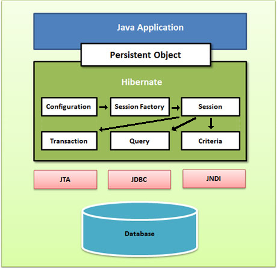

4 - Arquitectura Hibernate
El producte que utilitzarem serà Hibernate. Aquesta eina ens permetrà fer el mapatge entre objectes i les taules d'una Base de Dades. Aquestos objectes seran senzills, d'aquells que només tenen les propietats, i mètodes get i set per a accedir a elles.
Per a intercanviar la informació entre aquestos objectes i la Base de Dades, utilitzarem la classe Session (que seria l'equivalent de Connection de JDBC). Aquesta classe ens proporciona els mètodes:
- save(objecte) , que guardarà l'objecte en la Base de Dades
- createQuery(consulta) , que crearà una consulta
- beginTransaction() , que començarà una transacció
- close()
- ...
Amb açò, interactuar amb la Base de Dades serà molt senzill, i no farà falta executar sentències SQL, tal i com ens passava en JDBC.
Session no consumeix molta memòria i la seua creació i destrucció és molt barata, cosa que ens pot animar a crear (i destruir) una sessió per a cada accés a la Base de Dades. Ho anirem veient.
El context que ens fa falta per a una aplicació serà:
- Configuration. S'utilitza per a configurar Hibernate. L'aplicació utilitza una instància de Configuration per a especificar la ubicació dels documents que descriuen el mapatge i també per a especificar propietats específiques d'Hibernate. A partir de Configuration es crearà el SessionFactory
- SessionFactory. Permet construir instàncies Session. Normalment utilitzarem només un SessionFactory en tota l'aplicació, i d'ell traurem totes les sessions que ens facen falta, a no ser que ens toque accedir a més d'una Base de Dades, on aleshores tindrem una SessionFactory per cada Base de Dades.
- Session. Com ja hem comentat representa una connexió a la Base de Dades.
- Query. Permet realitzar consultes a la Base de Dades. El llenguatge utilitzat serà HQL (Hibernate Query Language) o el SQL del SGBD, però preferiblement utilitzarem el primer. Es construeix a partir d'un Session
- Transaction. Permet assegurar que es fan totes les actualitzacions o cap d'elles. De pas ens assegura que en cas d'error en mig d'una transacció, no es faça cap de les operacions. També es construeix a partir d'un Session

Llicenciat sota la Llicència Creative Commons Reconeixement NoComercial CompartirIgual 2.5